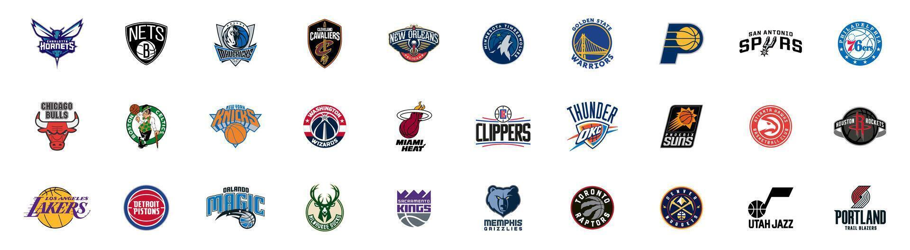

Conheça os times presentes na liga
Na NBA, os times são mais do que apenas equipes - são uma verdadeira paixão para seus torcedores! Conheça os principais times da liga, suas histórias, conquistas e a energia única que cada um traz para a quadra.
De clássicos como Los Angeles Lakers e Boston Celtics a equipes emergentes, cada time da NBA tem uma identidade que vai além dos jogos. Explore suas trajetórias, grandes vitórias e momentos inesquecíveis que marcam sua presença na liga.
Acompanhe os destaques da temporada, veja quem está dominando as classificações e fique por dentro de tudo que está acontecendo com os times mais populares e as surpresas do campeonato!
